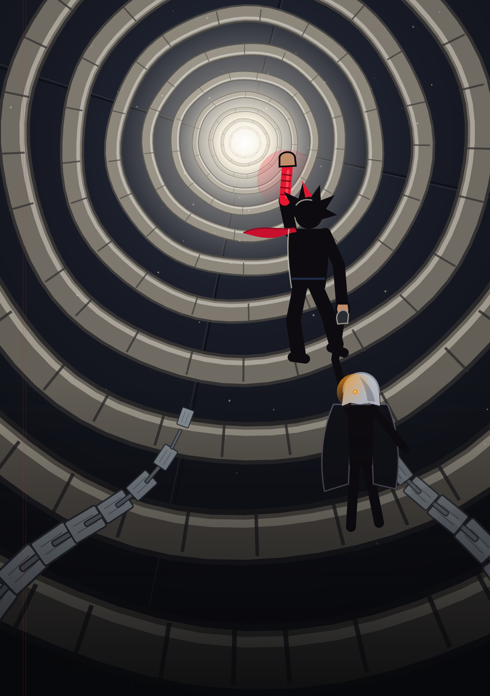
Book of the Ledger Vol.1 is the second setting guide to LEDGERBREAKER, an original anime project from P7 Anime. If Vol.0 was the ledger of the world and its people, this one is the ledger of how it's made — and of Episode 2.
The first half is a making-of: how Episode 1 became a storyboard, and how it became full-color Webtoon pages. The second half opens up everything Episode 2, "Terms and Conditions," adds to the map — the inside of the Bone Lift, the Middle Tier streets, the Registry, the Settlement Circle, and the investment contract itself, clause by clause.
This book goes up to the end of Episode 2, ending included. Nothing from Episode 3 on, and none of the big character secrets. Page 35, "The Memory Ledger," covers how Episode 2 ends.
• This is a pre-production guide. Designs, names and details may change.
• Storyboards appear as art and direction notes only. The dialogue column is blacked out.
• We print 10 of the 40 panels of Webtoon Episode 1.
• The Episode 2 script excerpt is the cold open only — the first 1:30, from a pre-final draft.
• Names and numbers that aren't locked yet are blacked out, even in in-world documents.
• Storyboards, Webtoon panels and diagrams keep their original Japanese lettering. English translations and keys sit right beside them.
• Names appear in Western order (Jin Akaba). In-world registries print them SURNAME, GIVEN.
• This is a work of fiction. No real person, group, religion or financial institution is depicted.
Episode 1, "I'm Not Paying" — the story so far
Kanegura is a vertical city where every power is borrowed from a god. At the very bottom, in the Underledger, Jin Akaba runs noodles for a street stall. He's rated ZERO — the one person no Lender will touch. His left arm, wrist to elbow, carries the red mark of the infinite debt his father left behind.
Then, the night after Collection Day, the masked Collector Nil comes for the collateral of Kei Kirishima, the woman who raised Jin. The Special Collection Writ names exactly what's owed: every memory of Jin that Kei has. Jin fights back with stall gear. He doesn't stand a chance.
Lying in the dirt, he hears a child's voice rising from the mark on his wrist: Hazama, the Zero Lender. One promise later, Jin awakens to Default — touch someone's Credit, seize it for about three seconds, and use it as his own. He takes Nil's chains, reels him in, and cracks his mask with one punch. Nil calls it "the same power your father had," puts the collection on hold, and leaves.
The bill? The one memory Jin still had of his father's face.
Someone saw it all through an amber Eye: Mio Kuzuha, a loan shark's daughter and an A-rated investor. A boy whose win probability reads undefined? She offers him a deal. Jin makes her swallow three conditions — then seals it not on paper, but with a gloved handshake.
Jin: Rating ZERO, balance −∞. Default used once. Kei: her mark still reads OVERDUE: 3 — but under it, in amber ink, there's a new line naming Mio as her guarantor. Mio: Jin's guarantor, by handshake.
Episode 1 runs 225 cuts on the storyboard, 91 of them drawn. We picked 16 to show what each cut is for: the camera, the timing, the pauses. The dialogue column is blacked out throughout. The Japanese notes inside each frame are translated under NOTE.
1 | A vertical city, a vertical camera
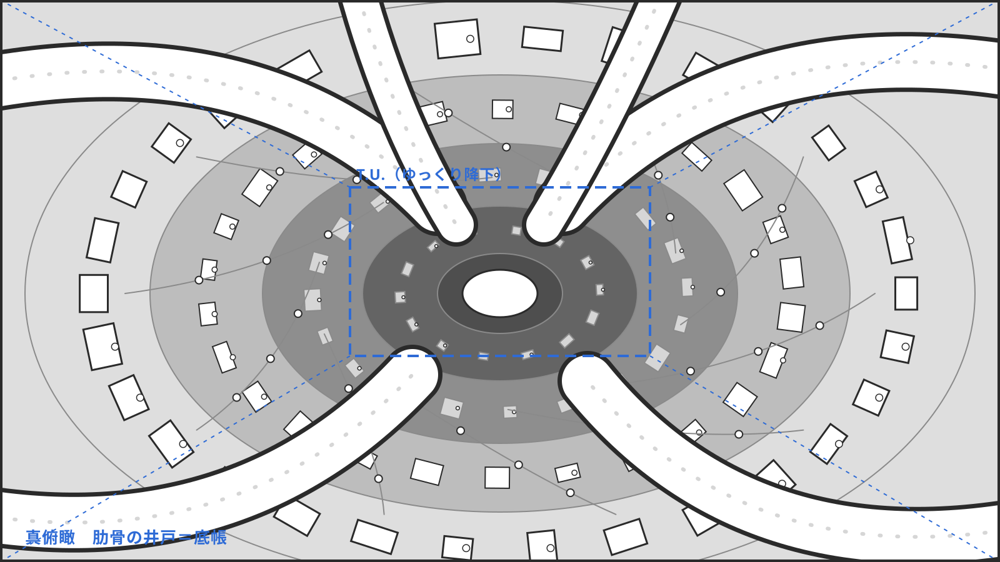
The show's first image. Two seconds of black, then a slow descent from straight overhead. Ribs arc in from every side; a night market glows at the bottom. No logo. No titles.
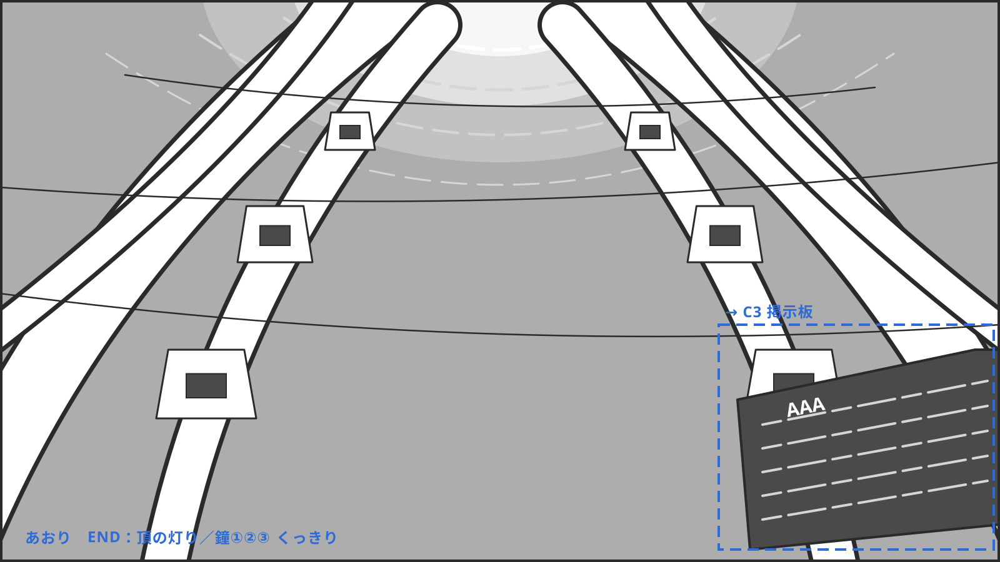
The bell rings and the whole crowd freezes — acted, not a held frame. Two seconds later we follow their eyes upward. Ribs closing overhead: the show's basic "looking up" composition.
2 | 1.2 seconds per wrist
Once the Collection Day notice lights up, we hit four wrist close-ups in a row: −120. −3,400. −18. −9,999. 1.2 seconds is the shortest a shot can be and still let you read one number.
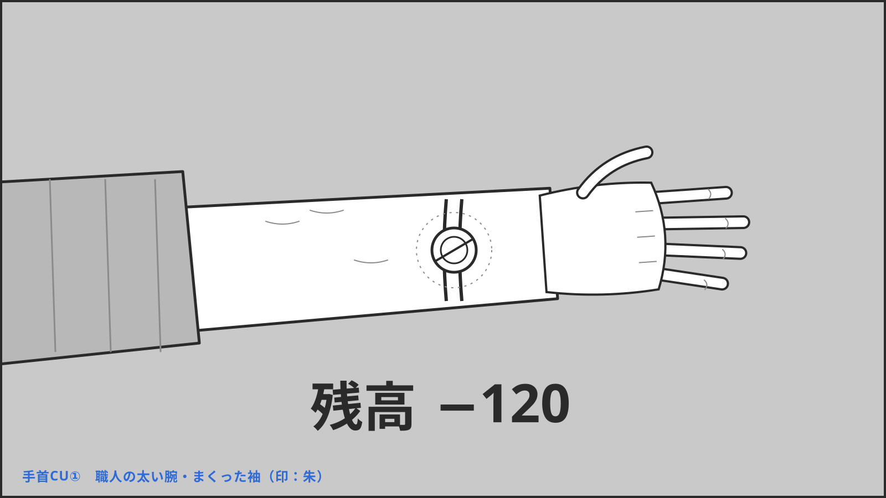
A craftsman's thick forearm. The number just floats up. Across the four cuts we change the arm's size, angle and age, so it reads as "everyone in town."
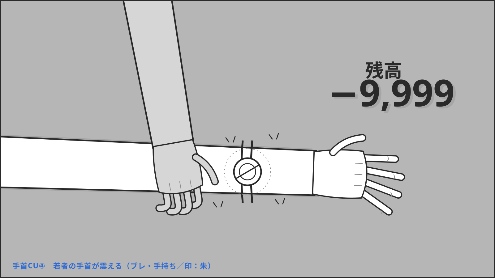
Only the fourth cut gets double the length, and only it goes handheld. A right hand clamps the left wrist; the number doubles with the shake. This is where the fear finally shows.
Three short cuts of equal length build a beat. The fourth breaks it — and where the beat breaks, the audience's eye stops.
3 | Kill the sound
In the plaza, a street busker has his voice collected. A few seconds that explain how this world works without a single line of explanation.
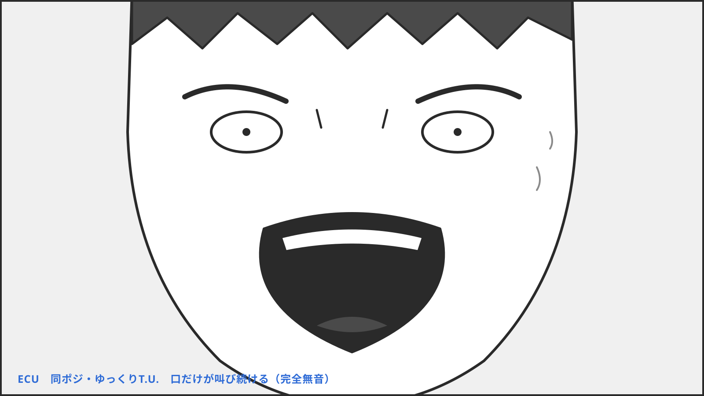
Mid-scream, the audio just cuts. The picture doesn't change: the mouth keeps screaming and the camera keeps pushing in. Three-plus seconds of dead silence — and the audience sits in it too.
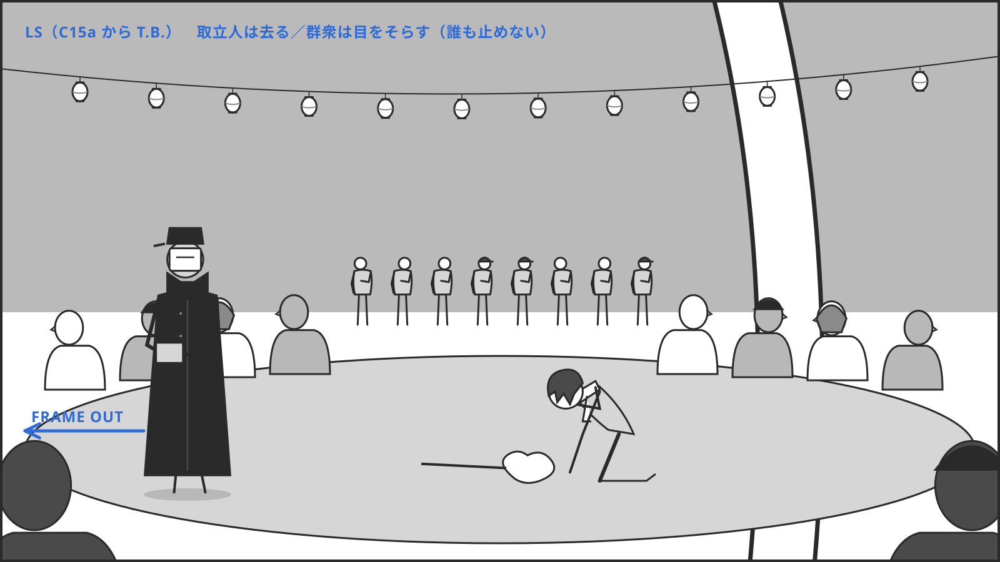
The only sound that comes back is the pap of the Collector's ledger snapping shut. Pull out wide: the ring of onlookers, every face turned away. A picture of nobody stopping it.
4 | Freeze, then introduce yourself
From the silent plaza, a crash of crockery — and our hero bursts in. From here on, it's all speed and lightness.
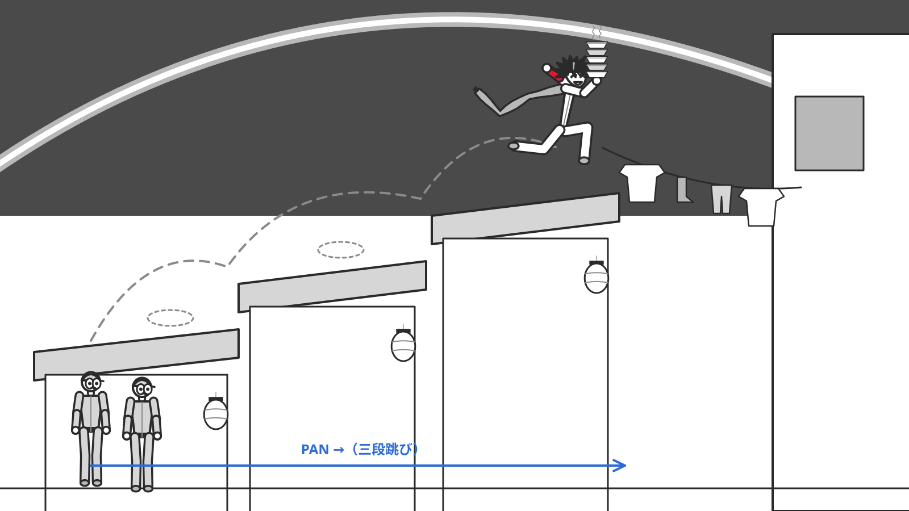
Up the stepped stall roofs in a triple jump, the path marked in dotted line. A wide, letterboxed long shot sells the height gap between Jin and the trainees staring up from below.
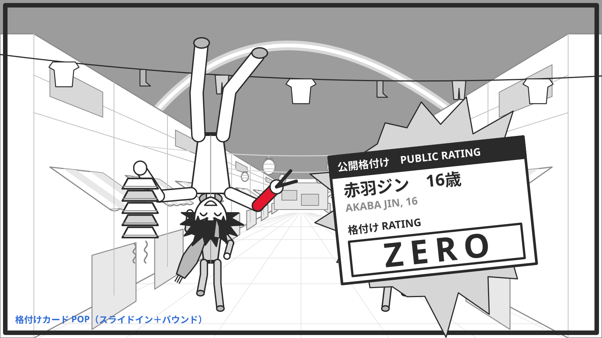
Upside down in midair, dead still. The frame drains toward monochrome, gets a heavy black border, and a Rating card slides in from the right and bounces. After all that running, we stop — once.
5 | The fear of looking up
Dead end. The trainees take a step back. The camera shows us why — from just behind Jin's head.
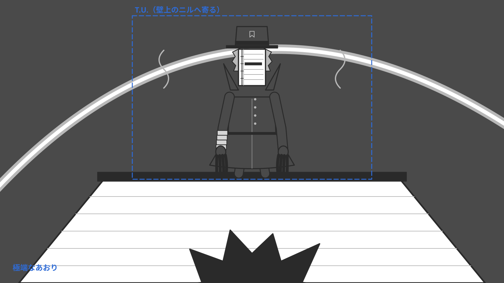
On top of the dead-end wall: Nil, the Collector. The only thing moving is the hem of his coat. The chains on his arm stay put. He shows how strong he is by doing nothing.
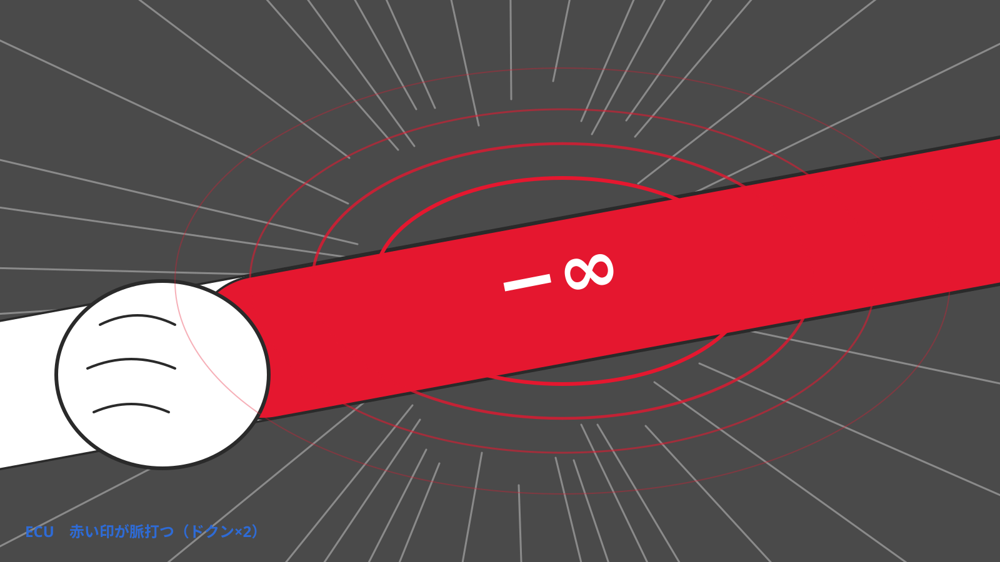
The red −∞ throbs twice — thump, thump. On the storyboard, red is reserved for Jin's and Hazama's marks, red ink, and the CONTRACT SUSPENDED counter. That's exactly why this red jumps off the page.
6 | Inside the white ledger
Inside Jin, knocked flat. From the noise of the alley, a zero-frame cut into pure white.
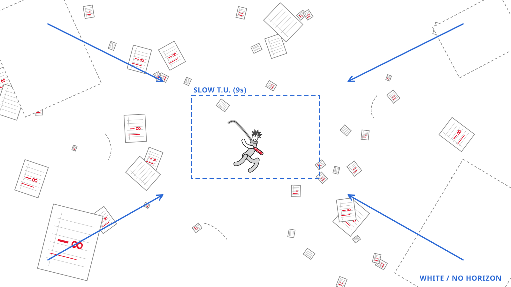
The drifting pages mix three motions: some fall, some slide sideways, some rise. Kill the direction of gravity and you get a place with no up or down. Every page carries a red −∞.
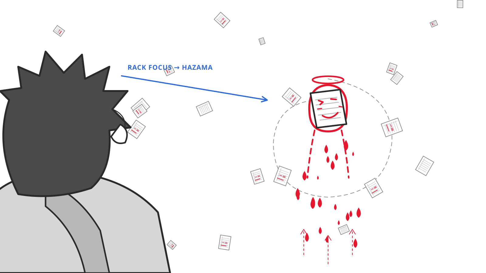
Drops of red ink rise from below like rain in reverse and build a barefoot child — head, then body, then legs. The face stays hidden behind a ledger page. Focus racks from Jin to Hazama.
7 | Flood it red. Touch at 4× slow.
The stamp of the promise comes down, and we're back in reality. The fastest cut and the slowest cut on the way to the first Default.
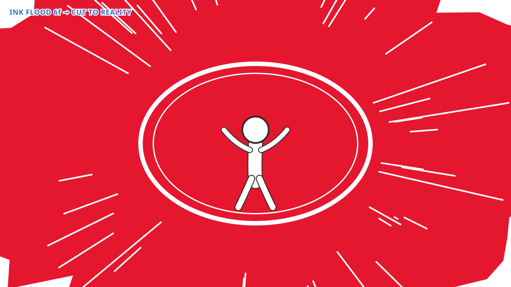
The giant stamp lands, and red ink floods out from the center to cover the whole screen in six frames, edges jagged with splatter. The last frame stays full red — then hard cut to reality.
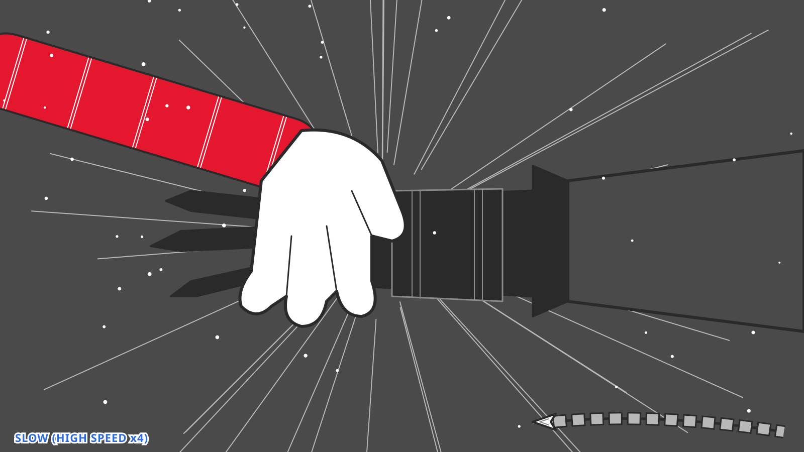
Jin's red left hand closes on Nil's black-marked wrist, one finger at a time. Hairline cracks spread from the point of contact like breaking glass. So slow even the dust in the air looks frozen.
8 | A frozen chain, a black-and-white hit
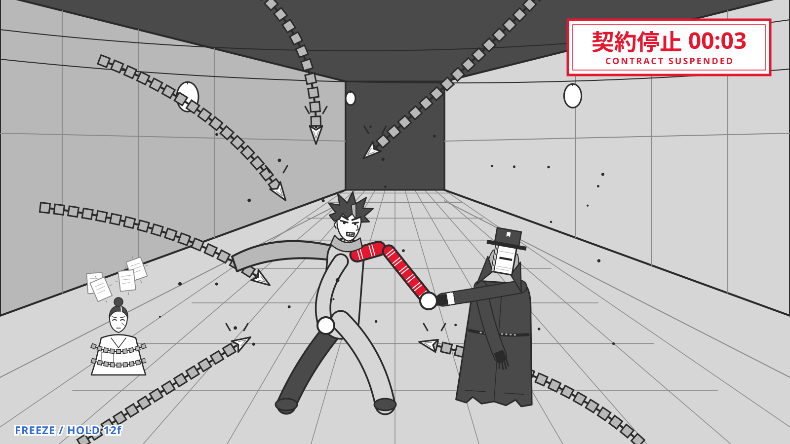
The chain aimed at Jin stops dead, blade a hand's width away, and holds for 12 frames. Only the tip trembles. Three seconds of "seizure," shown by a thing that has stopped moving.
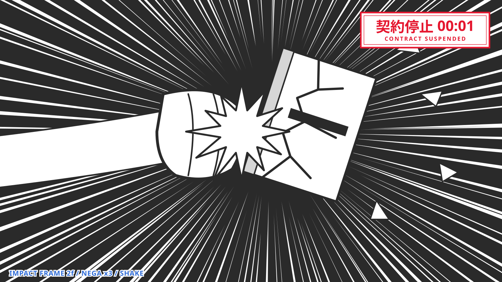
Three negative-flash impact frames, two frames each. The instant normal color returns, a crack splits the mask. The counter reads 00:01.
T.U. / T.B. camera pushes in / pulls back. PAN / TILT swing sideways / up-down. FIX locked off. OTS over the shoulder. ELS · LS · MS · BS · CU · ECU how much fits in frame, widest first. F.I. fade in from black. Blue lines in a frame are camera directions — they never appear on screen.
Ten panels from Webtoon Episode 1 (40 panels in all), made to be scrolled vertically on a phone. The Webtoon compresses anime Episode 1, fitting everything up to Default's awakening into one chapter. Even the blank space between panels is part of the direction. Lettering is translated under each panel.
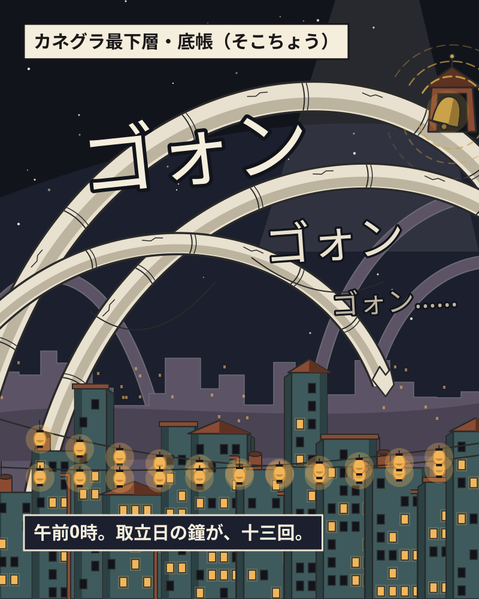
PANEL 01 · 60px GAP BELOWA tall opening panel: the city of ribs, and the bell. The GOOONG shrinks as it goes, pulling the eye down the page.SFX GOOONG · GOOONG · GOOONG…
CAPTION Kanegura, lowest tier: the Underledger. Midnight. The Collection Day bell, thirteen times.
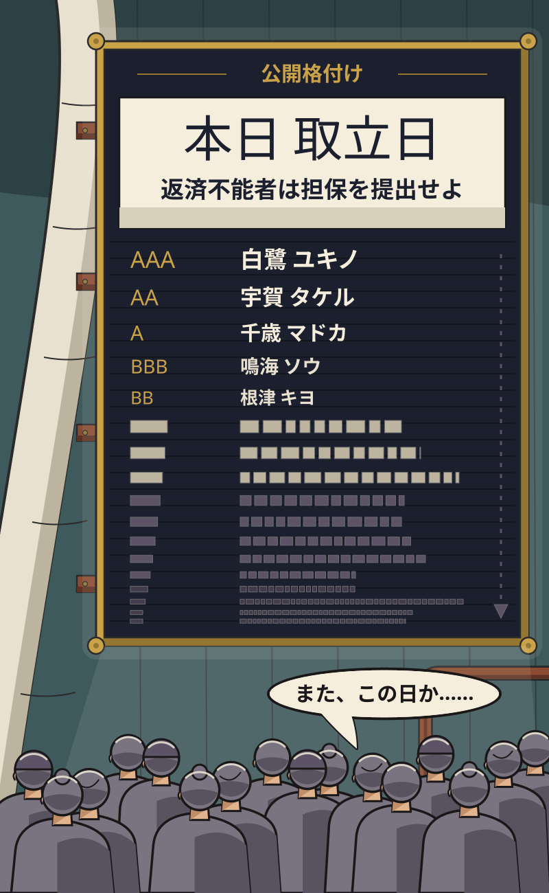
PANEL 02 · 40px GAP BELOWThe Public Ratings Board, from the crowd's eye line. Names at the top are readable; lower down they crush into illegible smudges. That's what inequality looks like.BOARD PUBLIC RATINGS · TODAY IS COLLECTION DAY · DEFAULTERS WILL SURRENDER COLLATERAL
BALLOON …This day again.
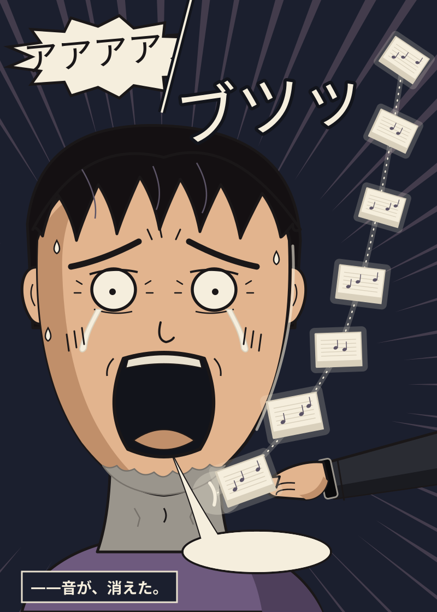
PANEL 05 · THE VOICE GOESMid-scream: bzzt. An empty balloon shows the silence. The page of light pulled from his throat is Settlement Ivory (C08); the drained throat is Collector Ash (C09). The Webtoon's promise: show the price within the first five panels.SFX AAAAAAH · BZZT
CAPTION —And the sound was gone.
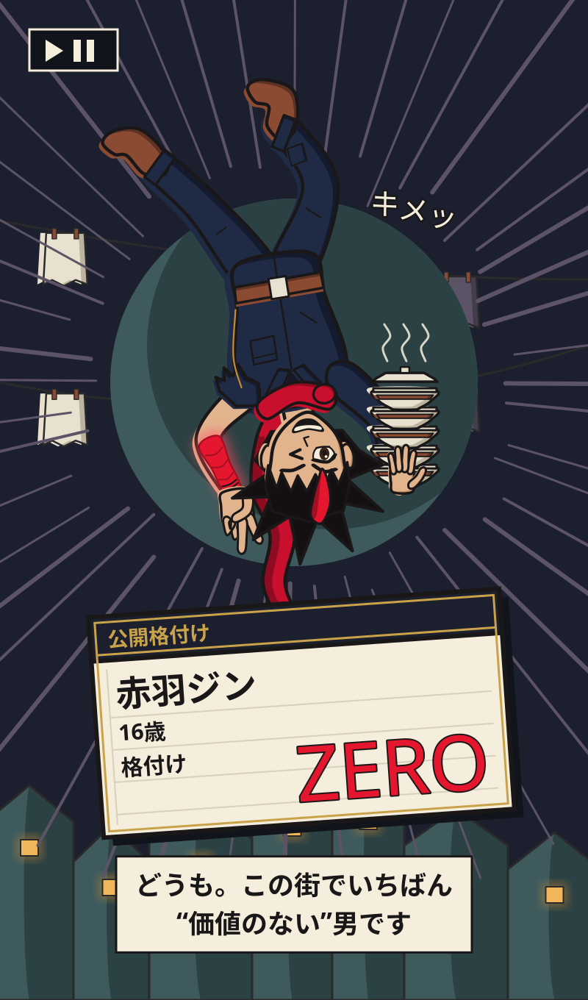
PANEL 10 · THE ZERO CARDThe anime's freeze frame, rebuilt as one tall panel: upside-down Jin and his Rating card. Only the red mark, the red lock of hair and the card's ZERO get ledger red.SFX KA-CHING (pose!)
CARD PUBLIC RATING · AKABA JIN · 16 · RATING ZERO
BALLOON Hi. I'm the least valuable person in this city.
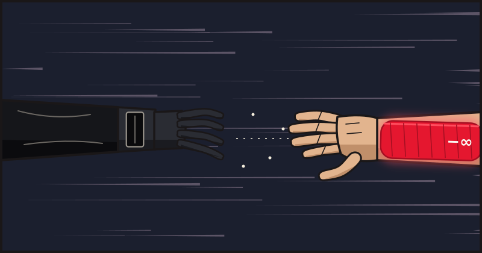
PANEL 32 · 400px GAP BELOWA thin, wordless strip. Nil's black-marked wrist on the left; Jin's red left hand reaching in from the right. Not touching yet — that gap is the whole panel. On a phone, a big empty scroll follows before the drop into the next full-height panel.
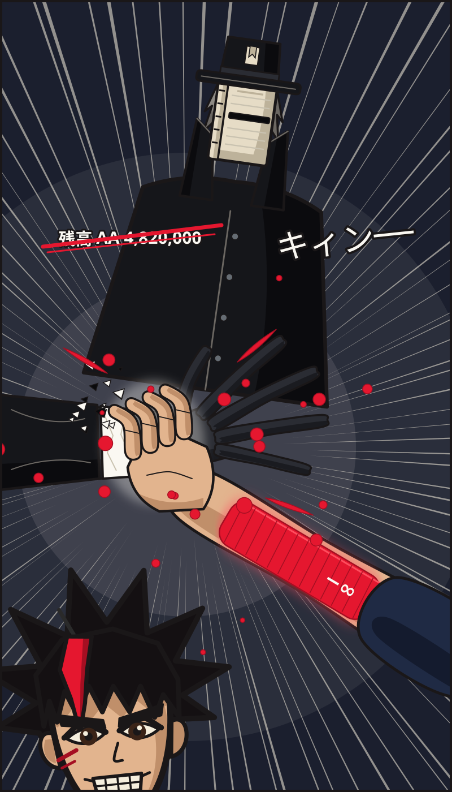
PANEL 33 · FULL HEIGHTContact. The black mark blanks to white; a red strike-through cuts the balance. Red ink sprays. The only sound is a high, glassy crack.MARK BALANCE AA 4,820,000
SFX KIIIN—
The eye drops in one rush: mask, grabbing hand, Jin's eyes. What the anime stretches with 4× slow motion, the Webtoon stretches with the height of the panel.
① A red strike-through on the target's number. ② The red counter: CONTRACT SUSPENDED 00:03. ③ The memory that pays for it blanks out like a white ledger page. Anime, Webtoon and this book all show it the same way.
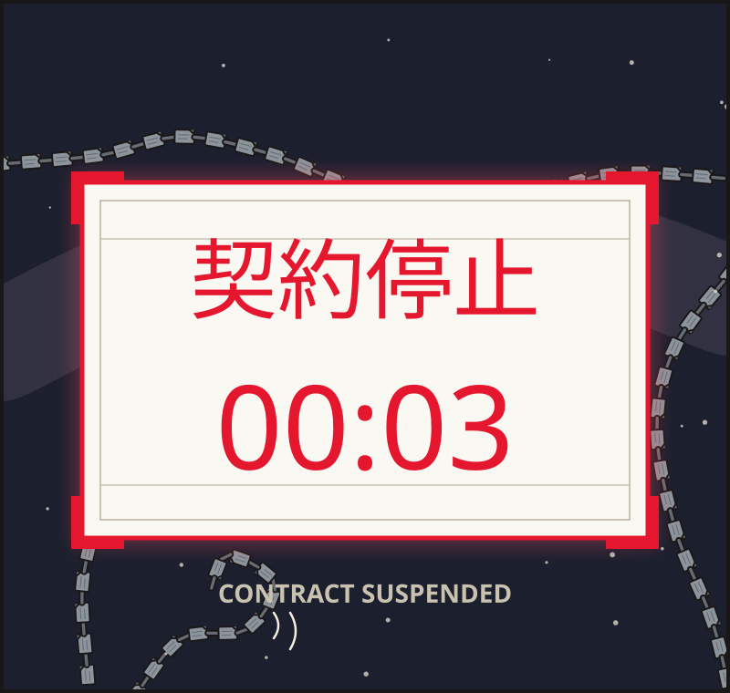
PANEL 34 · 120px GAP BELOWThe red counter: CONTRACT SUSPENDED 00:03. White-ledger ground (C80), ledger-red type. From here, the next three seconds are counted out in panels — 00:02, 00:01, 00:00.COUNTER 契約停止 = CONTRACT SUSPENDED · 00:03
Anime builds a pause out of seconds. In a Webtoon the reader scrolls with their own thumb, so the pause is built from the empty space under a panel, in pixels. 400px under panel 32, 300px under panel 37. Scene changes get a big gap; a rapid-fire run gets zero.
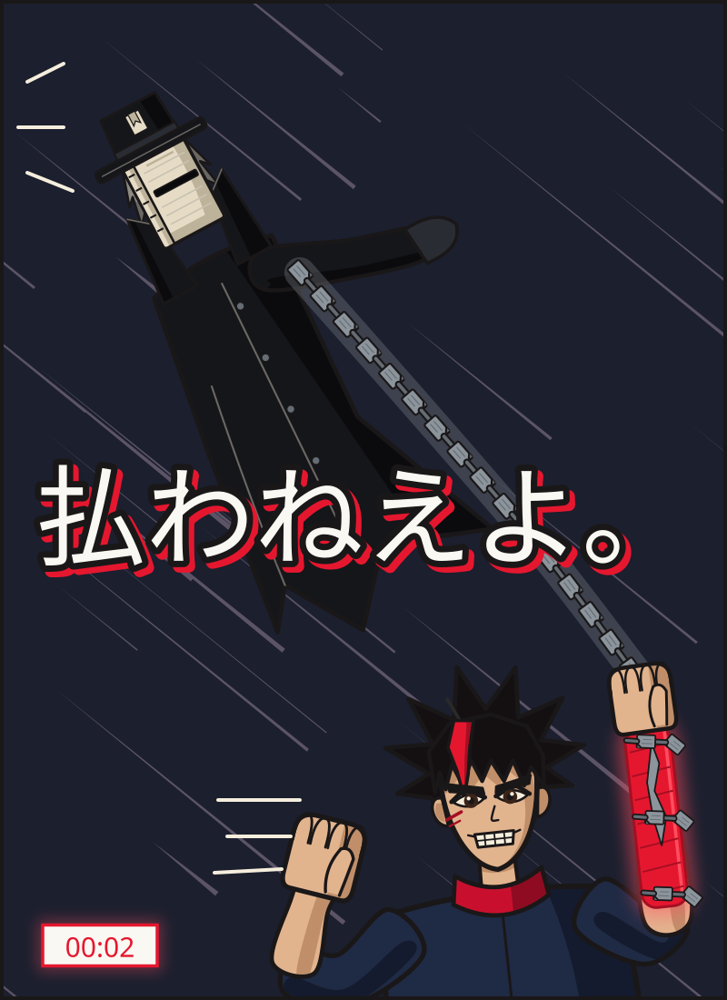
PANEL 36 · 0px GAP BELOWJin reels Nil in by his own chain and cocks his right fist. The catchphrase gets no balloon — just huge lettering. Zero gap: straight down into the hit.LETTERING "I'm not paying."
COUNTER 00:02
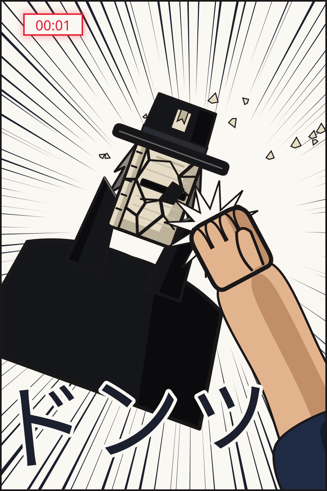
PANEL 37 · 300px GAP BELOWOut of silence, one hit at full volume. The fist lands in the ledger-cover mask and splits it wide open. White ground, speed lines. Counter: 00:01. In Episode 2 this crack comes back as the "rebound mask" (p.33).SFX DOOM
COUNTER 00:01
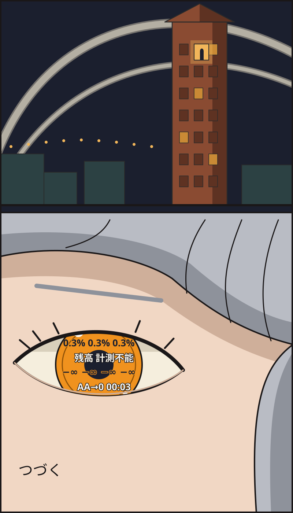
PANEL 40 · THE LAST PANELPull back to a high tearoom window in the Middle Tier — then an extreme close-up, numbers streaming through the iris of a right eye. The other eye hides behind her fringe.EYE 0.3% · BALANCE: UNMEASURABLE · −∞ · AA→0 00:03
CAPTION TO BE CONTINUED
The Webtoon's palette has one rule: ledger red is the only strong color. Against that, Mio's eye in this panel is amber (C70).
After forty panels, the first strong color that isn't red hits the reader's eye. That's the signal: this story continues. It's the one exception, there to make a cliffhanger out of color.
The rest of Webtoon Episode 1 isn't printed here. We're holding it back to release for free later.
Every panel goes through three stages before it's finished. Here's panel 10 (p.14), step by step. Lettering: SFX "KA-CHING (pose!)" · card "PUBLIC RATING · AKABA JIN · 16 · RATING ZERO" · balloon "Hi. I'm the least valuable person in this city."
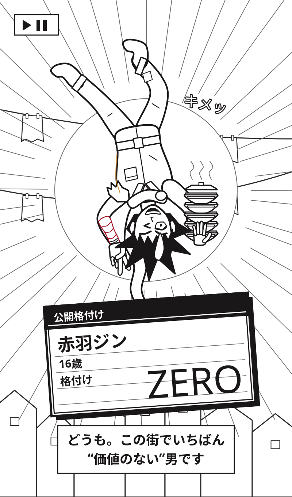
Several artists color the same chapter, so we keep the number of steps low and the results match no matter who's painting. The trade-off: color numbers are strictly fixed (next page).
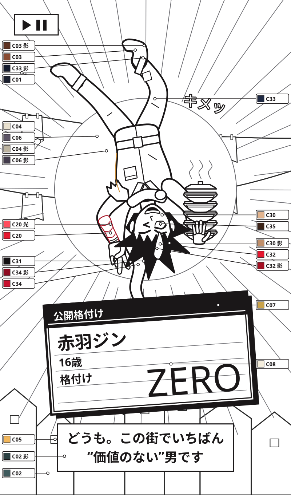
Colors are called by number, C01 to C83. Nothing off the chart gets used; any exception gets added to the chart first. Panel 10 uses 15 colors.
| C01 | Vault Night (night sky) |
| C02 | Underledger Teal-Gray (walls) |
| C05 | Lantern Glow |
| C07 | Bourse Gold (card frame) |
| C20 | Jin's mark |
| C32 | Jin's red lock of hair |
| C34 | Jin's towel |
| C33 | Jin's work jacket (navy) |
① Red is for the ledger only. High-saturation red goes to debt and to Jin (and Hazama) — nothing else. Never backgrounds, never extras' clothes; even red signage gets knocked down to Mid-Tier Rust (C03). So when red hits the screen, it's always about debt.
② Mio's amber is the one exception. The only strong non-red color in Webtoon Episode 1 is Mio's eye in the final panel (C70). The hook into the next chapter is told in color.
第2話「投資契約」 · approx. 22 min
The morning after the handshake, Mio shows up with the real thing: a formal investment contract, ready to file with the Bourse. Article 12, on the last page: if you lose, whatever your guarantor loses becomes your debt. Jin, whose arm is already red with his father's debt, shoves the stack right back. "I'm done with debt."
Then Mio's Eye reads out the number on Kei's guarantee: 29 days until it lapses. And the last Settlement Jin could get on the card before Collection Day? Registration closes tonight at eight.
A ZERO can't ride the Bone Lift cage. So, on a tip from Tsubame, Jin and Mio climb an old passage through the inside of the bone — with Nil, his mask stitched back together, right behind them. Mio's Eye reads. Jin touches. And they've budgeted exactly two Defaults.
| Block | Time | What happens |
|---|---|---|
| Cold Open | 00:00 | Breakfast / a reflex Default / enter Mio |
| OP | 01:30 | Opening titles (debuting this episode) |
| Act 1 | 03:00 | The fine print / 29 days and tonight's deadline / the back-road tip |
| Eyecatch | 08:40 | "2 LEFT" |
| Act 2 | 08:50 | Inside the Bone Lift / Nil gives chase / two touches only |
| Act 3 | 15:40 | Middle Tier lights / provisional entry / a name on the board |
| ED · Tag | 19:50 | Ending / the stall at midnight; Nil's ledger |
Morning at the stall. Tsubame drops from the roof going for Jin's chashu — and Jin grabs her wrist on reflex. Red strike-through. 00:03. On borrowed speed, he catches every bowl in midair. Then: an empty bowl. Touch, three seconds, steal it, pay in memory. If Episode 2 is your first, you get it all without a word of explanation.
The red CONTRACT SUSPENDED 00:03 now has company: an amber counter on the opposite side of the screen. Mio's Eye is counting the 10-second reconnect — how long before Default works on the same target again. Two clocks run at once, and Jin jumps at exactly ten.
The Ratings Board in the Middle Tier plaza. Below even the blank gray rows, red ink starts writing on its own: AKABA, JIN / ZERO (PROV.). The zero point of a rise from dead last, on the record.
That reflex touch at breakfast? Mio calls it pure waste. Every Default takes one of Jin's memories, so Mio sets the number of touches in advance. Budget for the Bone Lift: two. If two isn't enough, she'll read until it is — that's the job of a guarantor who takes fifty percent of his winnings.
Defaults used in Episode 2: three — one at breakfast, two inside the Bone Lift.
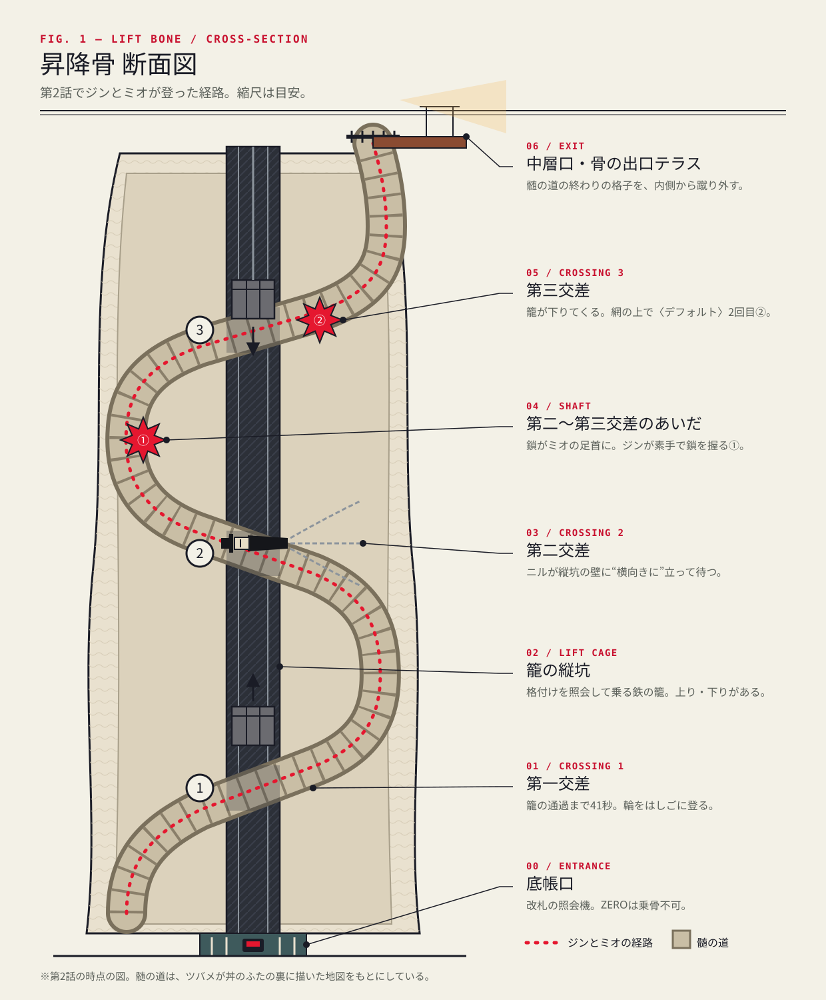
Legend: ジンとミオの経路 Jin & Mio's route · 髄の道 the Marrow Road · Footnote: as of Episode 2; based on the map Tsubame drew on the underside of a bowl lid.
The Bone Lifts are elevators inside the ribs, linking tier to tier. The bone is hollow, and iron cages ride up and down it — once they've scanned your Rating. But there's a second, older passage coiled around that hollow: the channel the god's marrow once ran through. The Marrow Road.
| Point | What's there |
|---|---|
| Underledger Gate | A huge opening at the root of the bone. Lines at the turnstile scanners. |
| Crossing 1 | First place the Marrow Road cuts across the cage shaft. Wait for the cage, then cross. |
| Crossing 2 | A Collection Bureau lookout post. In Episode 2, Nil is waiting here. |
| Crossing 3 | Right in the cage's path. If one comes down from above, there's nowhere to go. |
| Exit | A grate at the end of the road. Beyond it: the Bone Exit Terrace, Middle Tier. |
Inside, rings of bone stack up like concentric circles — a ladder, if you're desperate. Look straight up and there's white light far, far above. The only map is the one Tsubame drew in grease pencil on the underside of a bowl lid (p.32).
Passengers without a Rating may not board.
Passengers rated A or above may not bring unrated companions aboard.
When someone with no Rating (a ZERO) climbs to another tier unregistered, that's off-the-books travel — and the Collection Bureau can move to collect, Collection Day or not. It's why Nil can chase them up the bone in Episode 2.
Past the grate they kick out of the bone, the screen blows out to white, then slowly finds its exposure again. Here's the first view of Episode 2's Act 3, as one picture.
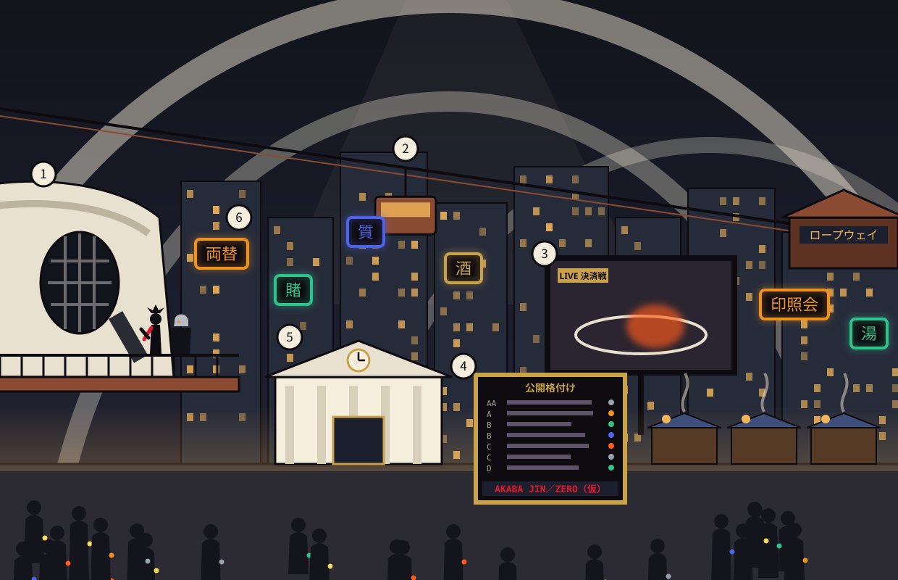
Instead of the Underledger's fish-stock broth: fryer oil and exhaust. On screen, the color of the steam tells you what it smells like.
The Middle Tier theme rides a city-pop bassline. Up here, you can't hear the runoff waterfalls of the Underledger.
Middle Tier people check the mark on their wrist again and again as they walk. In this town, when your balance goes up, so does your address. When it drops, so do you.
Middle Tier Settlements have a monthly registration deadline. In Episode 2, "the last card you can get before Collection Day" closes at eight that night.
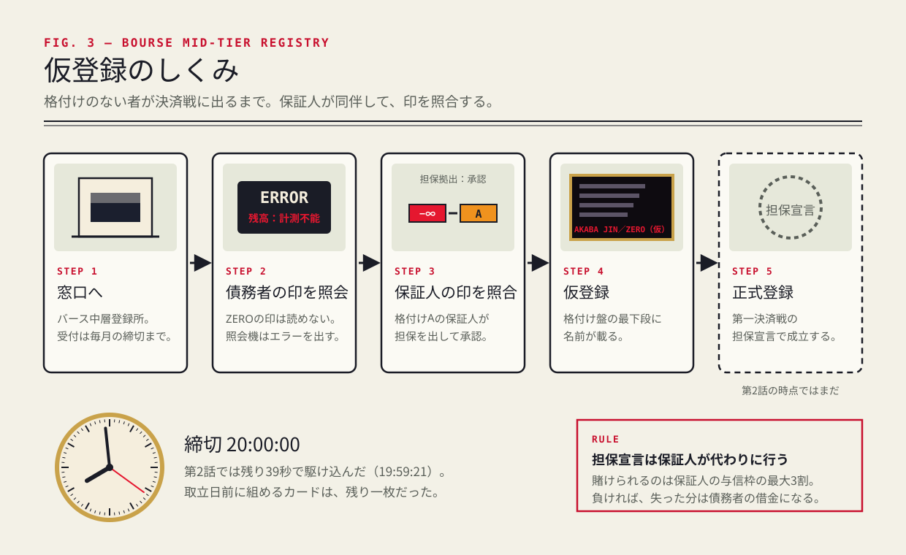
Jin puts his wrist to the scanner: BALANCE: UNMEASURABLE. A ZERO entry has no precedent. So the guarantor comes along, has her own mark checked, and shows she'll put up the collateral. That's provisional entry.
Full registration happens when the collateral declaration is made at the first Settlement. At the window, Mio says she'll stake 30% of her credit limit — the maximum.
Flipping through the contract, the registry clerk stops dead at Article 12 — and shoots Jin a look. What it says is on p.30.
A Settlement is fought on a Bourse-licensed Circle. Jin's first bout has been booked into Middle Tier Circle No. 7.
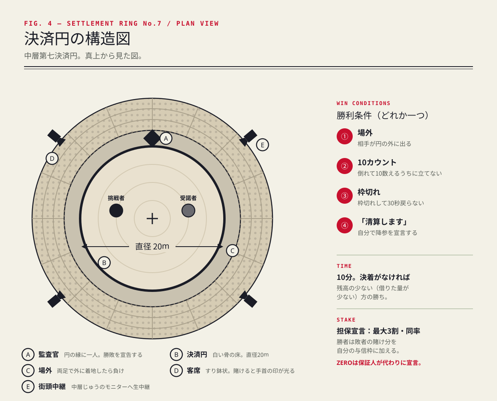
Time limit, win conditions and stakes are the same as Vol.0 p.10 (per the series bible).
In the Middle Tier, the Settlement lineup is called the card. It's put together at the Registry and posted in the plaza and on every street monitor. Through Mio's Eye, the posting floats up in amber.
| Circle | When | Matchup |
|---|---|---|
| No. 7 | In 3 days | AKABA, JIN (ZERO / guarantor: KUZUHA) vs. ＿＿＿＿＿＿ (C) |
| No. 3 | In 2 days | (licensed, B) vs. (licensed, B) |
| No. 5 | In 4 days | (licensed, C) vs. (licensed, D) |
| Rule | What it means |
|---|---|
| Deadline | One every month. Miss it and you're not on that month's card. |
| vs. Collection Day | Kei's guarantee is a promise to pay out of the first Settlement's purse. No card before Collection Day, and the guarantee lapses (p.34). |
| A ZERO entry | No credit limit, so only if a guarantor declares the collateral for him. |
| Stakes | Up to 30% of the credit limit, equal on both sides. |
A C-rated fighter who borrows from Hikube, the Flame Lender, vermilion lines up to the elbow. Mio's Eye puts their win probability at 96.1%; Jin's column just blinks undefined. Name and look are still being designed, so we're keeping them under wraps for now.
The contract Mio files with the Bourse in Episode 2, set out as clauses for this book (excerpt). It's the Episode 1 handshake, on paper.
ORIGINAL · FOR FILING WITH THE BOURSE
The guarantor, KUZUHA, MIO ("the Guarantor"), and the debtor, AKABA, JIN ("the Debtor"), agree as follows.
ART. 1The Guarantor shall make collateral declarations on the Debtor's behalf in his Settlements, and shall put up that collateral from her own credit limit.
ART. 2The purse from the first Settlement shall go to repaying the arrears of KIRISHIMA, KEI, per Special Term 1. From the second Settlement on, the Guarantor receives fifty percent of the Debtor's winnings.
(Articles 3–11 omitted)
SPECIAL TERM 1The first Settlement purse pays off Kei's arrears. First thing.
SPECIAL TERM 2Nobody's collateral gets taken for Jin Akaba's sake.
SPECIAL TERM 3Someday, the Kuzuha books burn too.
ART. 12Any collateral the Guarantor loses through defeat becomes a debt owed by the Debtor, AKABA, JIN, to the House of Kuzuha.
Forty, then fifty. In Episode 1, Mio said "forty percent of your winnings." That was the price of intel and gear, she explains. Putting up collateral too? With the guarantee fee, it's fifty.
The special terms are handwritten. They're the three conditions Jin counted off on his fingers up on the rib in Episode 1, word for word. The third is pressed in a little harder.
In Episode 2, Mio puts her name on the record as Jin's guarantor. She puts up the collateral. She makes the declaration.
Mio's Eye gives her time, distance, trajectories, an opponent's Rating and Credit — and win probability. In Episode 2 it reads Nil's next move to the split second. The Eye's numbers are amber; Default's are red. On screen, the two never share a color.
Decide how many touches up front. Inside the Bone Lift: two. That breakfast touch: waste. It's how Mio, who's always trusted numbers over people, protects Jin's memories.
The first purse goes to Kei's arrears. From the second bout on, fifty percent of the winnings. Lose, and Article 12 makes it Jin's debt.
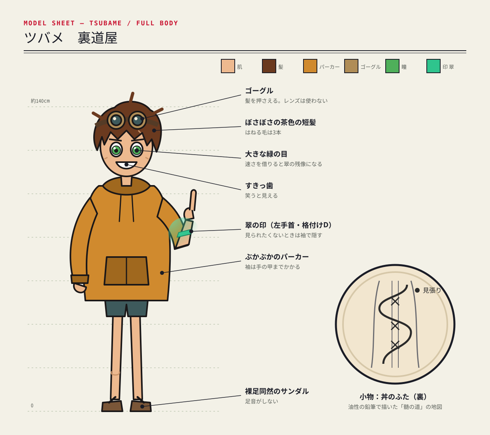
Sheet notes: goggles hold her hair down, lenses unused · messy short brown hair, three cowlicks · big green eyes; borrowing speed turns her into a jade afterimage · gap tooth, shows when she grins · jade mark (left wrist, Rating D) — hidden under the sleeve when she doesn't want it seen · baggy hoodie, sleeves past her knuckles · barely-there sandals; her steps make no sound · prop: the bowl lid, with the Marrow Road map drawn in grease pencil (見張り = lookout) · height approx. 140 cm
In Episode 2 Tsubame is a back-roads dealer. She knows how to get through the Marrow Road, the old passage inside the Bone Lift, and how many lookouts there are. The map is on the underside of a bowl lid. Her fee is the usual bowl of noodles; Jin's answer is "Put it on my tab."
At breakfast she dives off the stall roof as a jade blur, going for Jin's chashu. Jin grabs her wrist on reflex — making her the first "friendly" ever hit by Default.
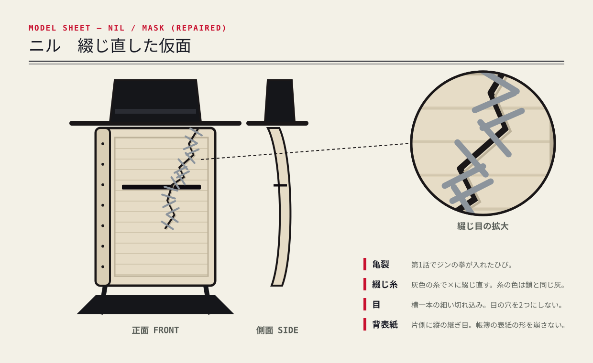
Sheet notes: FRONT · SIDE · stitching detail — crack: made by Jin's fist in Episode 1 · stitches: gray thread in X's, same gray as the chains · eye: one thin horizontal slit; never two eyeholes · spine: a vertical seam on one side; keep the ledger-cover shape intact
Nil has stitched the crack shut with gray thread — the one Jin's fist put there in Episode 1. Same mask shape; a row of X-stitches runs across the break. This is how Nil is drawn from now on.
At the end of Episode 1, Kei's arrears got a guarantor. But that guarantee comes with an expiry date.
The guarantee is a promise to pay out of the first Settlement's purse. If no first bout is booked before Collection Day, the guarantee lapses and the Special Collection Writ comes back into force. And then that mask comes back — this time with no hold.
Paying debt with more debt, Kei says, is "the worst way there is to pay." Still, with her back turned, she gives Jin one piece of advice: "Don't put your back to a wall. Run the edge. Ring or pit — keep circling, and the chaser tires first." Inside the shaft, Jin does exactly that, running the rim of the rings to slip the chains.
Every Default costs Jin one memory, paid to Hazama. The bigger the Credit he seizes, the more precious the memory it takes. Here's everything he's paid so far, kept as a ledger.
| Ep. | Where | Credit seized | Memory paid |
|---|---|---|---|
| 1 | Alley by the stall | Nil's Seizure Chains (AA) | His father's face |
| 2 | The stall, morning | Tsubame's speed (D) | That morning's breakfast |
| 2 | Shaft, Crossings 2–3 | Nil's chain (AA) | The face of the old regular who likes extra scallions |
| 2 | Crossing 3, on the net | Nil himself (AA) | The day Kei first called him "my kid" |
Breakfast. Staring at an empty bowl: "Did I eat already?" Jin laughs it off.
The old man's face. The old man at the window in Episode 1's opening, who got his bowl handed over from a laundry line. When a customer at a Middle Tier stall yells "Extra scallions!", Jin's feet stop for a beat. Why it snagged, he can't tell anymore.
"My kid." A small hand clutching the hem of a cook's smock, and a young Kei's voice. The memory turns into a white, ruled page, peels away and flutters up into the dark. Hazama: "That one was a little pricey."
That night at the stall, Kei laughs as she tells Tsubame how hard Jin cried that day. "Bet he'll say he doesn't remember." Only the audience knows it's now true.
Mio can't tell what Jin paid. All the Eye shows her is one unreadable digit moving beside the −∞. Jin just grins: "Didn't pay a thing. Just skipped out on the bill."
Episode 2, first 1:30 (00:00–01:30). Excerpted and arranged from a pre-final draft; may differ from the finished episode. Official English lines are those fixed for the dub and subtitles.
SKIP-PROOF: NO LOGO, NO TITLES. STEAM FROM THE VERY FIRST FRAME.
A heap of broken bowls in the foreground; through the steam, the smashed stall. Three grooves gouged by chains still scar the post.
KEI sets a single bowl on the wooden crate that's standing in for a counter.
JIN snaps his chopsticks apart. But what he's looking at isn't the bowl — it's Kei's left wrist. A faded indigo mark: OVERDUE: 3. Beneath it, in amber ink: GUARANTOR: KUZUHA, MIO / TO BE PAID FROM: FIRST SETTLEMENT. Kei covers it with her palm. Jin says nothing and slurps his noodles down in one go.
SFX: ON THE ROOF, A FAINT JADE HUM.
Hyper-speed POV. Off the roof drops TSUBAME, a jade afterimage. Target: the chashu in Jin's bowl.
Jin's left hand snaps around Tsubame's wrist. Pure reflex.
SFX: A HIGH, CLEAR NOTE, LIKE GLASS BREAKING.
Red ink sprays into the air. A single red strike-through cuts the jade number on Tsubame's wrist.
ON SCREEN: CONTRACT SUSPENDED 00:03
Tsubame's afterimage stops dead — she's just a twelve-year-old again, stumbling in midair. Now jade lines race over Jin's body. The world goes slow: a bouncing bowl, flying chopsticks, the chashu, three empty bowls tipping off the crate. Still on borrowed speed, Jin catches every one in midair, stacks them — and finally plucks Tsubame by the collar.
ON SCREEN: 00:00 CONTRACT RESUMED
In Jin's hand: one empty bowl.
Kei's hands go still.
CAMERA: INSERT — JIN SLURPING NOODLES, JUST A MOMENT AGO. THE IMAGE BLANKS OUT LIKE A WHITE LEDGER PAGE. SFX: PAPER TEARING, DRY (SMALL).
Tsubame is staring at her own wrist. For a second the jade number jumps to digits she's never seen. She yanks her hoodie sleeve down over it.
The shadow of a parasol falls across Jin's bowl. MIO KUZUHA stands there: black jacket over her shoulders, a closed folding fan in her hand. Afterglow numbers are still streaming through her amber right eye.
She drops a thick stack of paper onto the crate — thud. Gold border on the cover: INVESTMENT CONTRACT (ORIGINAL).
SFX: ONE STAMP. MUSIC: OP INTRO, IN.
Every episode's opening ends on the red mark on Jin's wrist. This week, the counter 2 LEFT is laid over it, and we cut straight into the episode.
It's built for anyone starting at Episode 2. Touch, three seconds, steal it, pay in memory: every rule of the power, in about 40 seconds, with no line of explanation. Mio's last word is the door into the episode's real theme — the budget.
This volume prints the cold open only; the full Episode 2 screenplay is not published here. Tsubame's "Dibs!" is 「いっただきー！」 in Japanese — roughly a gleeful "Thanks for the food!" shouted mid-theft.
Episode 2 is a story about numbers. Twenty-nine days. Eight tonight. Forty-one seconds. Ten seconds. Two touches. Thirty percent. Fifty. Mio counts everything. Jin counts almost nothing.
And yet Jin kept to Mio's "two." The one who doesn't count trusted the one who does. Meanwhile Mio can't count what Jin is paying — all her Eye shows is one unreadable digit moving. These two will probably never balance their books. I want this to be the story of how they watch each other's backs anyway.
In the first half we showed you how Episode 1 was put together: a few seconds of silence, 1.2 seconds per wrist, a rule that allows exactly one red. Out of sight, we're counting a lot of things.
To everyone who picked up this ledger after Vol.0: thank you, from the bottom of my heart. We'll pay off the tab in the show itself. Promise.
— Hikaru, Showrunner, P7 Anime
Picking up with Episode 3, "First Settlement." Middle Tier Circle No. 7, and Jin's first licensed Settlement. His opponent's win probability: 96.1%. Touches he can afford: probably just one. We'll let you know as soon as it's confirmed.
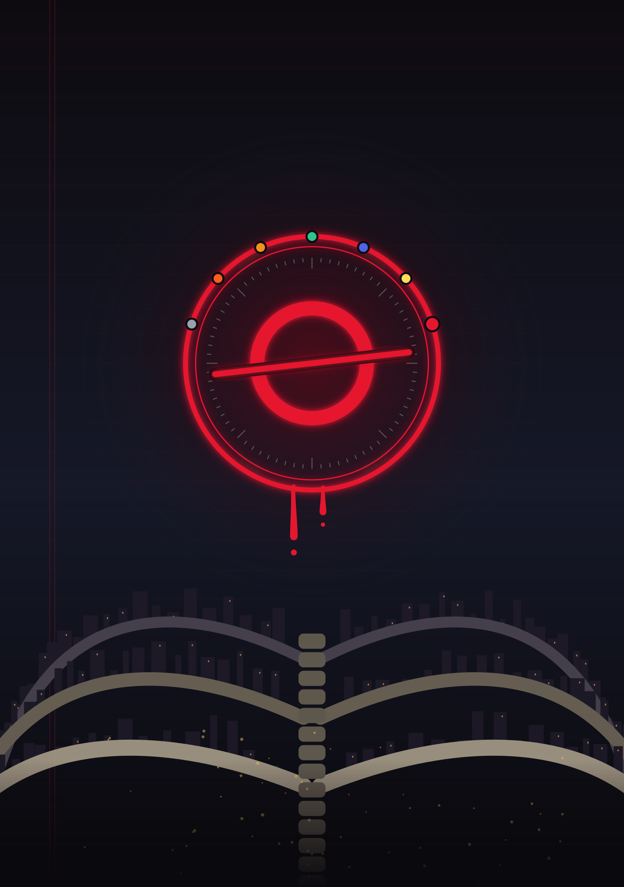
Setting guide to the original anime project LEDGERBREAKER (帳簿破り) — Episode 2
English edition · First published 2026
About AI use: The text and illustrations in this book (including the storyboards, Webtoon panels and model sheets) were created using AI tools, and were edited and supervised by the owner.
This is a pre-production guide; details may change as the project develops. This is a work of fiction. All names, places, gods and institutions are invented.
© 2026 masahiro20 / P7 Anime. All rights reserved.
No part of this book may be reproduced or redistributed without permission.